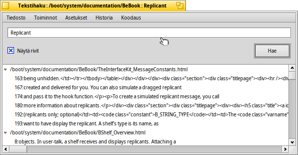

Tekstihaku
| Työpöytäpalkki: | Ei valikkoriviä, käynnistetään normaalisti Seuraajalisäosan kautta | |
| Sijainti: | /boot/system/apps/TextSearch | |
| Asetukset: | ~/config/settings/TextSearch |
Tekstihaku etsii merkkijonoa tekstitiedostoissa. Tyypillisesti sitä kutsutaan Seuraajan lisäosan asiayhteysvalikosta valitsemalla tiedostot tai kansiot, josta merkkijonoa halutaan etsiä.
Aloitat kirjoittamalla hakumerkkijonon teksti-ikkunaan ylhäällä ja napauttamalla Enter-näppäintä tai napsauttamalla -painiketta. Jos on valittuna, osumat laajennetaan automaattisesti näyttämään hakumerkkijonon sisältävät tiedoston rivit.
Vain muutama sana muuten itsestäänselvistä valikkoriveistä:
Tiedostovalikko | ||||
| ALT N | Avaa uuden ikkunan, jossa voit kirjoittaa toisen merkkijonon ja etsiä sitä samoista tiedostoista/kansioista. | |||
| ALT F | Valitaan uusi tiedostojen ja kansioiden joukko etsittäväksi. Vaihtoehtoisesti voit raahata ja pudottaa tiedostot/kansiot ikkunaan. | |||
Toimintovalikko | ||||
| ALT T | Poistaa kaikki rivit luettelosta, joka ei ole nykyisin valittu. | |||
| ALT O | Avaa nykyiset valitut tiedostot ensijaisella sovelluksella (sama kuin kaksoisnapsauttamalla). Jos se on tekstieditori, joka tukee sitä (kuten Pe), voit hypätä tarkalleen sille riville, josta hakumerkkijono löytyi. | |||
| ALT K | Avaa nykyisin valittujen tiedostojen sijainnin Seuraajassa. | |||
| ALT B | Kopioi nykyisen valinnan leikepöydälle. | |||
Asetukset-valikko | ||||
| Tämä on hyödyllinen työskenteltäessä "unixy"-ympäristössä, missä usein hallinnointitiedostot piilotetaan ".folders/"-kansioiden sisälle. Versionhallintajärjestelmät, kuten SVN ja CVS ovat esimerkkejä sovelluksista, jotka käyttävät tätä ja niitä käytetään laajalti Haikussa. | ||||
| Tekstihaku käyttää komentorivityökalua grep. Sitä varten erikoismerkit, kuten '"*\$?! ja välilyönnit ilmaistaan koodinvaihtomerkillä \. Tämän aktivoinnin poistaminen tarkoittaa, että sinun on tehtävä tämä itse, mutta vaihdossa sinulle myönnetään säännöllisten lausekkeiden voima. | ||||
| Tekstihaku on nykyisin hyödyllinen etsittäessä merkkijonoja pelkistä tekstitiedostoista. Tämä asetuksen poistaminen saa tekstihaun kuitenkin etsimään sitä kaikentyyppisistä tiedostoista. | ||||
| Pakottaa tiedostojen avautumisen ensisijaiseksi määritellyssä koodimuokkaimessa (joka käsittelee text/x-source-code-tyyppistä koodia). Muussa tapauksessa tiedosto avautuu missä tahansa sovelluksessa, joka on asetettu sen tiedostotyypille. Hyödyllinen esimerkiksi kun muokataan HTML-tiedostoja, jotka avautuvat normaalisti webbiselaimessasi. | ||||
Historiavalikko | ||||
| Sisältää äskettäin käytetyt etsintämerkkijonot. | ||||
Koodausvalikko | ||||
| Antaa sinun valita eri merkkikoodausten välillä, jos on tarvetta. | ||||